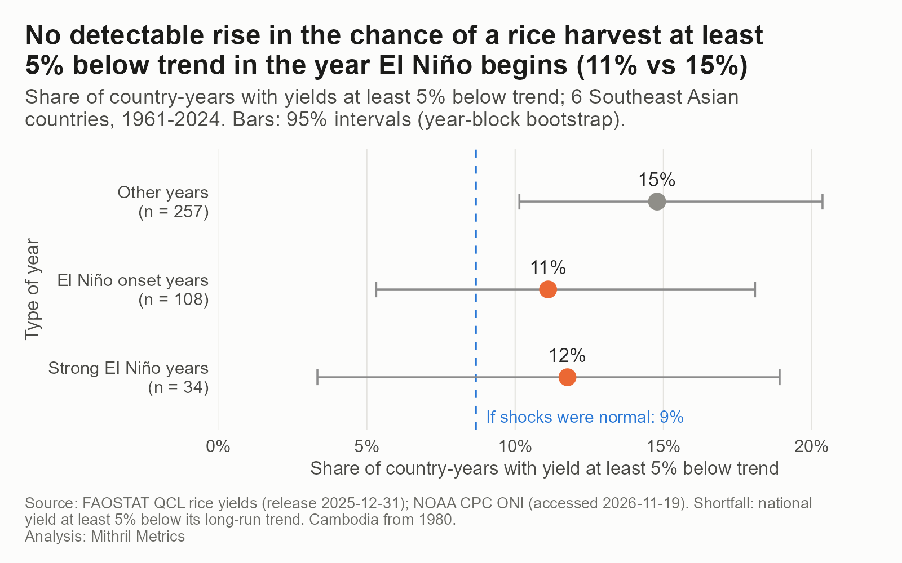
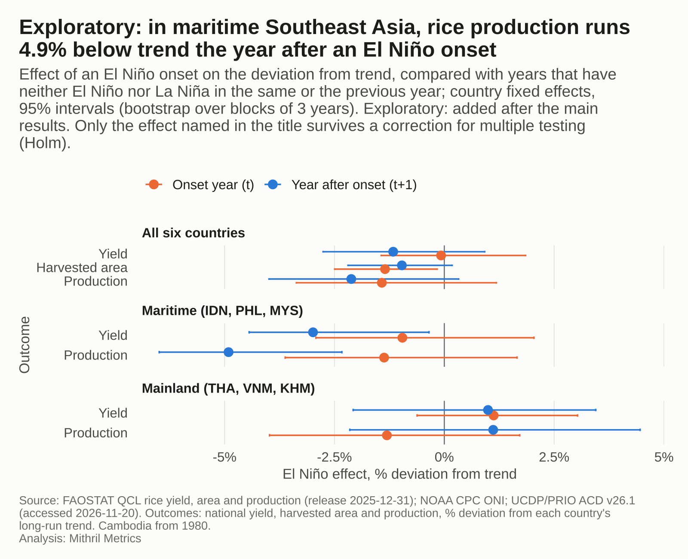

Bottom line. Not in the year it begins. Across six Southeast Asian countries since 1961, El Niño onset years show no detectable rise in national rice shortfalls (11% of country-years at least 5% below trend, against 15% in other years). The damage shows up a year later and only in the maritime countries, where rice production runs 4.9% below trend after an El Niño onset. Separately, harvests 10% or more below trend come 8.3 times as often as the calm years would lead you to expect.
Why this matters now
On 12 November 2026 NOAA’s Climate Prediction Center reported that El Niño is still strengthening, with a strong to very strong event likely through January to March 2027. The three-month Niño 3.4 anomaly for August to October stood at 2.46°C. FAO and WFP have launched their first joint anticipatory action appeal for this event, and rice, Southeast Asia’s staple, is among the crops most exposed. Anyone planning reserves, imports or early action needs two answers: when do the harvest losses arrive, and how deep can they go? Sources: NOAA CPC ENSO discussion and the FAO-WFP joint appeal.
What we did
We use FAOSTAT national rice yields, harvested area and production for Viet Nam, Indonesia, the Philippines, Thailand, Malaysia and Cambodia, 1961 to 2024 (365 country-years). For each country we fit a smooth long-run trend and treat the deviation from it as that year’s shock. A year counts as an El Niño onset year when NOAA’s Oceanic Niño Index averages at least 0.5°C from July to December (19 years). We then compare how often harvests fall at least 5% below trend in El Niño years and in other years, within each country, and build confidence intervals by resampling whole years, because a single El Niño hits all six countries at once.
What the data show
Deep shortfalls come more often than calm years suggest

In a typical year, national rice yields in these countries move about 3.7% around their trend. A bell curve with that spread predicts a harvest 10% or more below trend in 0.36% of country-years. It happened in 3.0%: 11 of 365 country-years, or 8.3 times as often (95% interval 3.7 to 14.3). The gap holds when we drop the major conflict years (7.9 times) or the 1997-98 Asian crisis (7.8 times).
Our reading is a mix of long calm stretches and a few sharp breaks, rather than a smoothly fat tail. A bell curve stretched to cover all years, bad ones included, fits the 10% threshold much better (1.4 times, interval 0.6 to 2.4), and a formal estimate of the tail shape is close to zero. The practical point stands: a reserve or insurance product calibrated on typical years will underprice the bad ones.
In the year El Niño begins, no detectable rise

El Niño onset years had a shortfall of 5% or more in 11% of country-years, against 15% in other years. The difference within countries is -3.7 percentage points (95% interval -11.3 to 4.1). That rules out a large increase but not a modest one. Strong events look no different (12%), and only 19% of the worst tenth of harvests fell in onset years, which make up 30% of all years.
The signal arrives a year later, in maritime Southeast Asia

A July to December El Niño often hits a harvest that FAO records in the following calendar year, so we also looked at the year after onset, and at yield, area and production separately. This check was added after the main results and is exploratory. In Indonesia, the Philippines and Malaysia, rice production runs 4.9% below trend the year after an onset (95% interval -7.3% to -2.3%). Of the 14 effects we tested, it is the only one that survives a correction for multiple testing (adjusted p = 0.002), and dropping any single El Niño event leaves it between -5.3% and -4.5%. On the mainland the same estimate is +1.1%, indistinguishable from zero.
One reading, which these data cannot test, is that rainfed and dry-season rice on the islands is more exposed to El Niño droughts, while irrigated deltas on the mainland buffer them.
What this means for policy
- If the aim is to time anticipatory action or imports, the national data point to the harvests after the El Niño year, in the maritime countries, rather than to the onset year itself. The trade-off: waiting for national figures means acting after local losses are already under way.
- If reserves or insurance are sized on typical year-to-year variation, deep national shortfalls will come several times more often than planned. Larger buffers cost money in the many calm years, so the choice is between that cost and the cost of a shortfall.
- If the 2026-27 event behaves like past ones, the 2027 rice figures for Indonesia, the Philippines and Malaysia are the ones to watch. The estimate is an average over 19 past events and cannot say how this one, stronger than most, will play out.
Caveats
- These are national averages. A drought that halves the harvest in one province can vanish in the national total, so the results say nothing about local losses, which is where food insecurity concentrates.
- Timing is approximate. FAO records harvests by calendar year while cropping seasons straddle years, so part of the year-after effect may be the same season recorded late.
- The maritime result comes from an exploratory check added after the main analysis. It survives a multiple-testing correction and leave-one-event-out checks, but it rests on three countries and 19 events and needs provincial data to confirm.
Data & code
- FAOSTAT Production: Crops and livestock products (QCL) (QCL; item Rice (27); elements Yield (5412), Area harvested (5312), Production (5510)), version 2025-12-31 (bulk catalogue DateUpdate), data 1961-2024, accessed 2026-11-19. Link
- NOAA CPC Oceanic Niño Index (ONI, ERSSTv5) (oni.ascii.txt (3-month running mean SST anomaly, Niño 3.4)), version monthly update; latest season at access is recorded in key_numbers.csv, accessed 2026-11-19. Link
- UCDP/PRIO Armed Conflict Dataset (ucdp-prio-acd-261 (country-years with intensity_level 2, via gwno_loc)), version 26.1 (1946-2025), accessed 2026-11-19. Link
Code to reproduce every number and figure: GitHub. One-page brief: PDF.

Written by Pietro Sala. Views are the authors’ own. Part of Mithril Metrics: short, reproducible analyses of current agri-food, water and climate policy questions.